Stream Host
A Stream Host is an application that can either be installed as a Docker container, a Windows Service, or a Console Application. Stream Hosts enable Data Streams to run and execute actions and are also responsible for getting the configurations of Non-Virtual Agents.
Note
It is recommended that you read the article listed below to improve your understanding of Stream Host.
How to Install a Stream Host
The recommended Stream Host deployment is as a Docker container - see the Docker instructions.
Alternate methods can be found at Install Stream Host.
Logs
How to Check Logs
To check the logs for a Steam Host, follow the steps below:
- Open the Collection page.
- Select the Collection.
- Click the Stream Hosts button.
- Select the desired Stream Host.
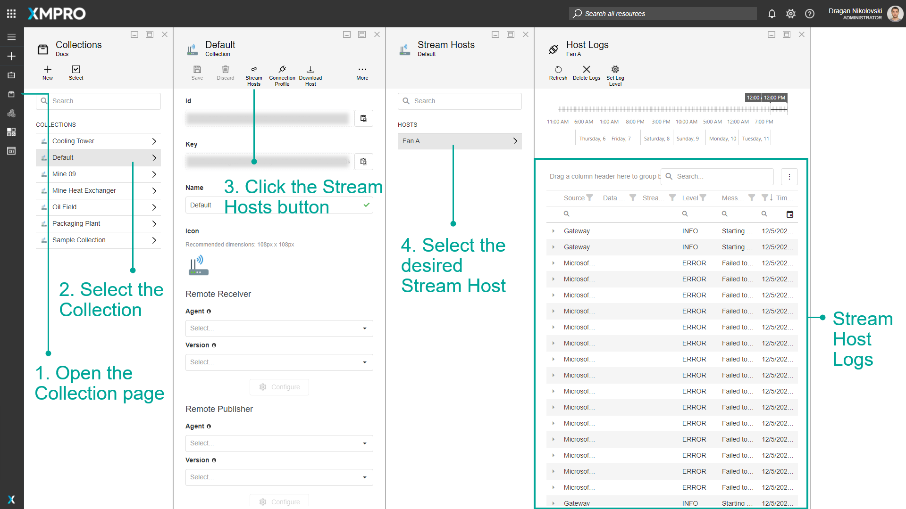
How to Set the Log Level
You can change the Log level to either Info or Trace. To change the Log Level, follow the steps below:
- Open the Collection page.
- Select the Collection.
- Click the Stream Hosts button.
- Select the desired Stream Host.
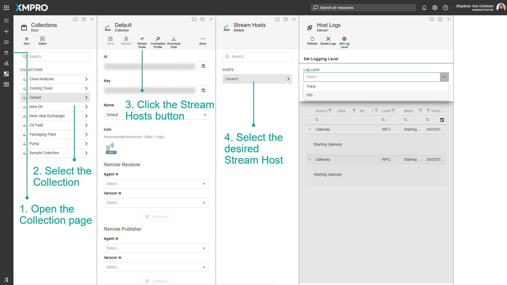
5. Click on Set Log level.
6. From the dropdown, select either Info or Trace.
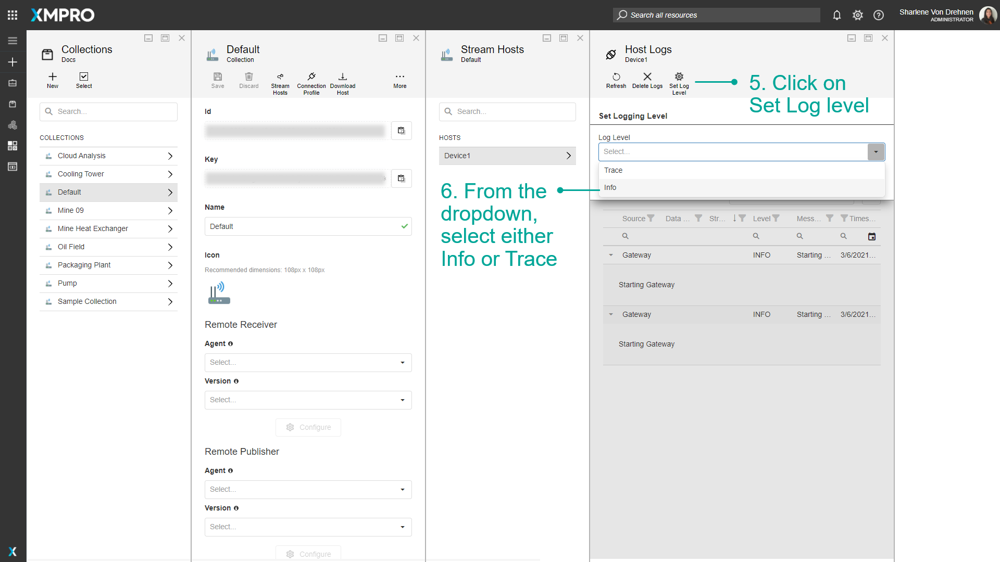
7. Click on OK.
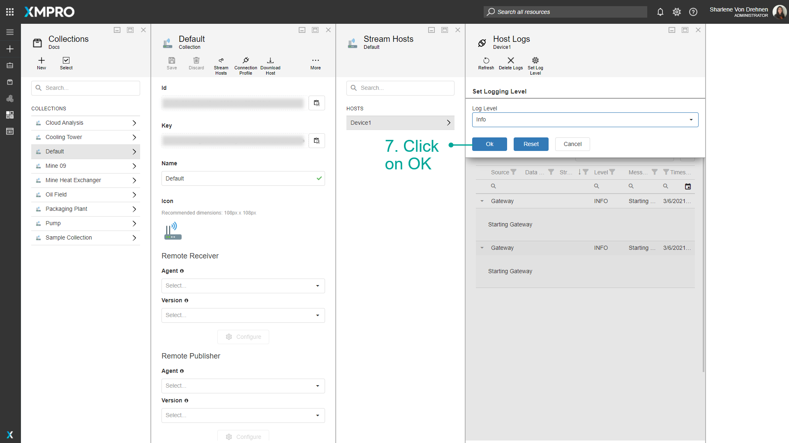
How to Filter Log Levels
You can filter and narrow down the errors and messages that have already been logged in the table. For example, if you filter for Info errors, only info level errors will be displayed. To filter the log level for a Steam Host, follow the steps below:
- Open the Collection page.
- Select the Collection.
- Click the Stream Hosts button.
- Select the desired Stream Host.
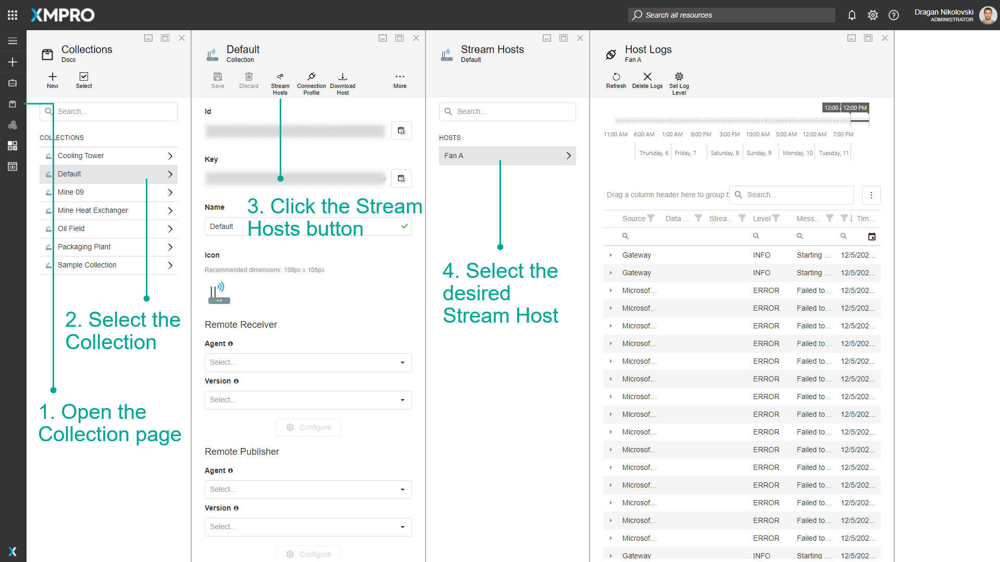
5. Click the icon next to the Level column.
6. Select the Log Level.
7. Click OK.
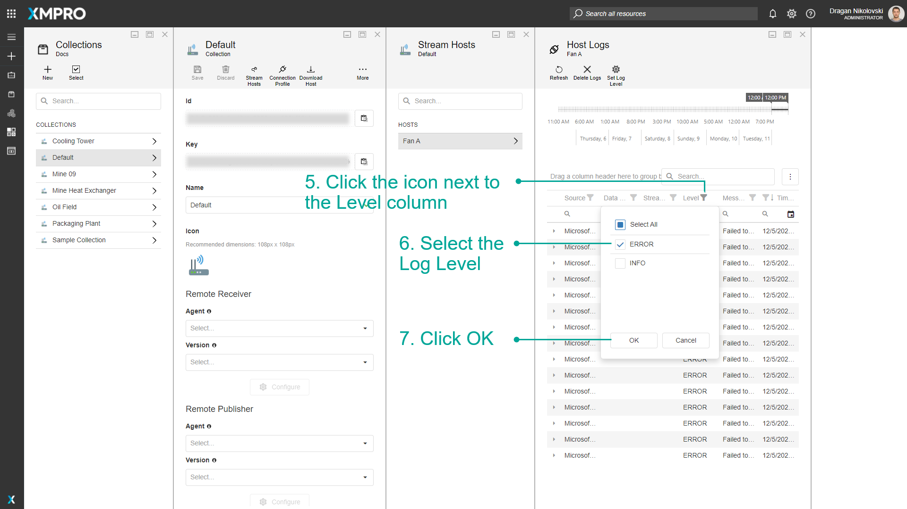
How to Clean the Logs
To clean the logs for a Steam Host, follow the steps below:
- Open the Collection page.
- Select the Collection.
- Click the Stream Hosts button.
- Select the desired Stream Host.

5. Click the Delete Logs button.
6. Confirm your action.
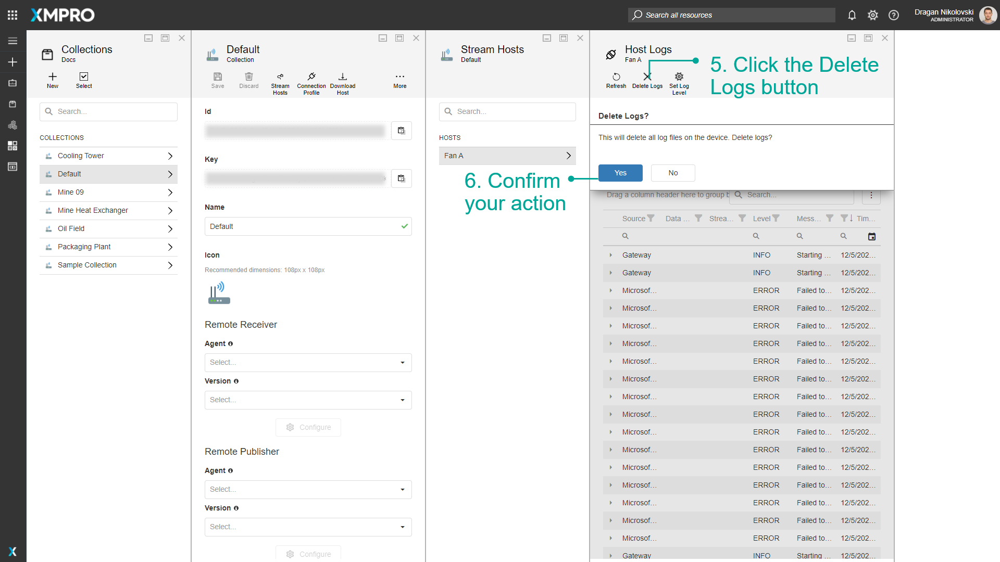
How to Export Logs
To export the logs for a Steam Host, follow the steps below:
- Open the Collection page.
- Select the Collection.
- Click the Stream Hosts button.
- Select the desired Stream Host.
- Click the "three dots" button.
- Click Export all data or Export Selected rows.
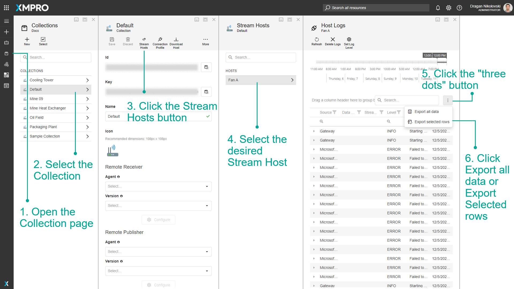
How to Find Online Hosts
To find online Stream Hosts, follow the steps below:
- Open the Collection page.
- Select the Collection.
- Click the Stream Hosts button.
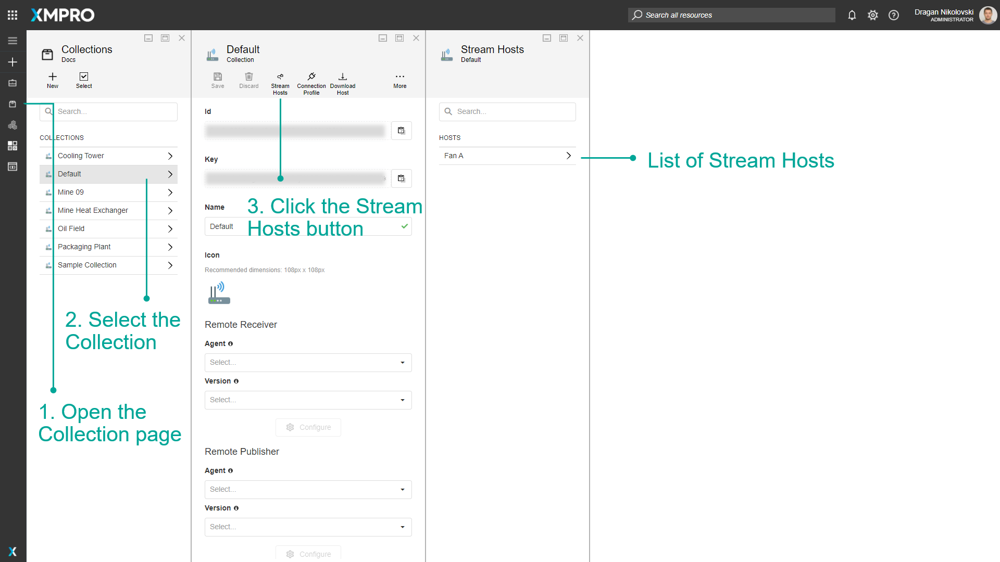
How to Override Variables
Although each Stream Host in a given Collection downloads the same definition of a Data Stream, the Variables defined in Data Stream Designer can be overridden by the individual Stream Host to provide the unique configuration e.g. per Asset, site, or OPC IP Address.
The options to override variables for a Stream Host are:
- Using Environment Variables - enables the scalable and efficient creation of multiple Docker Stream Hosts through scripting.
- Using Variables.xv files - requires manual edits for each Stream Host.
In practice you'd use one or the other, but it may be helpful that the Stream Host
The Stream Host retrieves variable values in the following order:
- Environment Variable, if no match then...
- Variables.xv File, if no match then...
- Variables (i.e. as detailed in Using a Variable)
Using Environment Variables
v4.4.2
This option can be applied to any Stream Host install scenario, although it is better suited for when running Stream Host on Docker.
Create an environment variable that is applied to a running Stream Host instance, prefixing the name of the variable that should be overridden with xmvariable__
xmvariable__NameOfVariable1=foo
xmvariable__NameOfVariable2=bar
xmvariable__NameOfVariable3=noop
Using Variables.xv files
Note
This option is not supported when running Stream Host on Docker.
- Open the Collection page.
- Select the Collection.
- Hover on More.
- Click Variables.
- Click Select file and upload the encrypted variables.xv file, found in the Data folder of the Stream Host's installation directory e.g. "C:\Program Files\XMPro Stream Host\Data".
- You can enter overrides for any Variables.
- Click Download to get the updated file.
- Replace the original file in your Stream Host folder with the new one.
- Restart your Stream Host to load the updated variables.
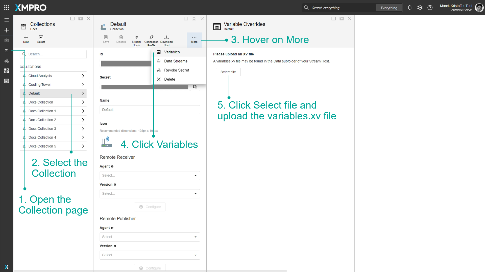
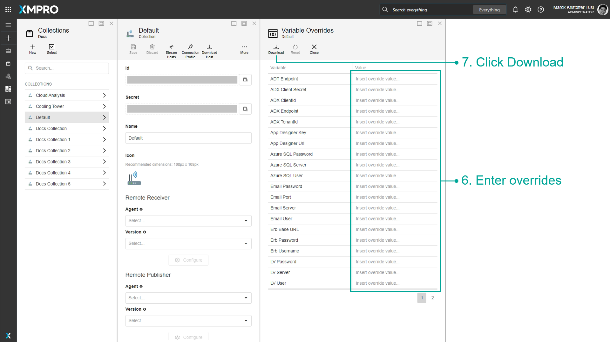
Last modified: May 30, 2025